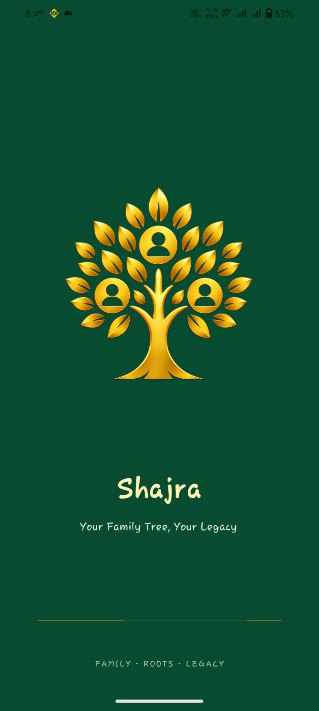
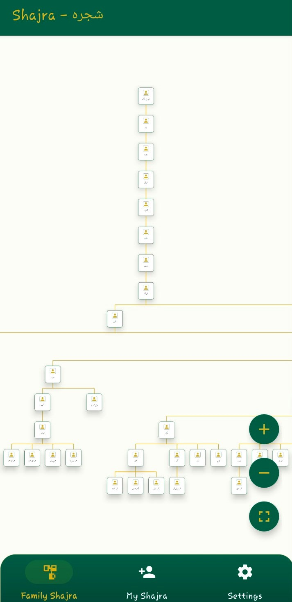
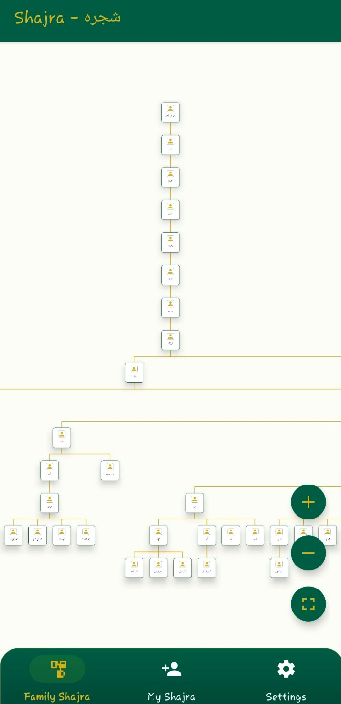
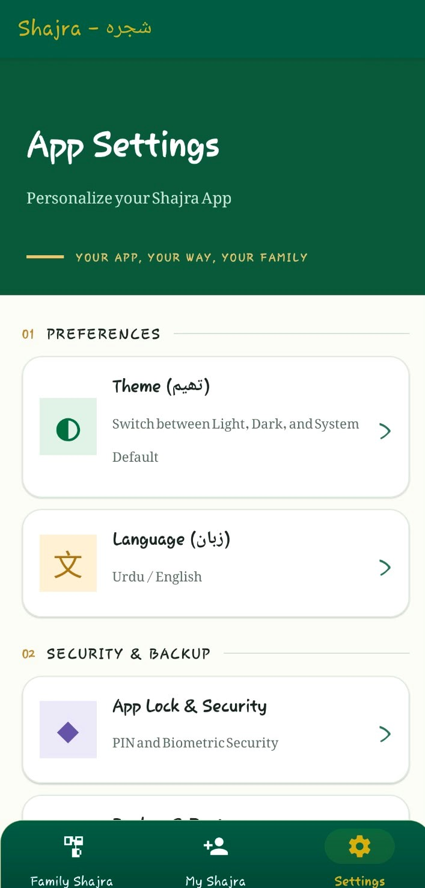
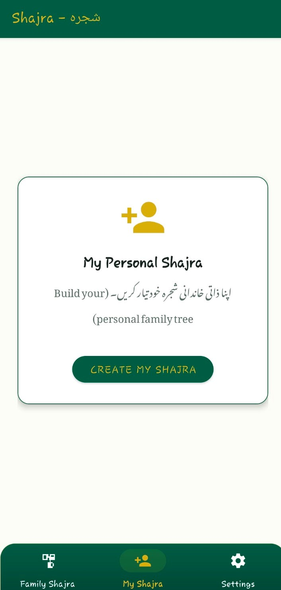
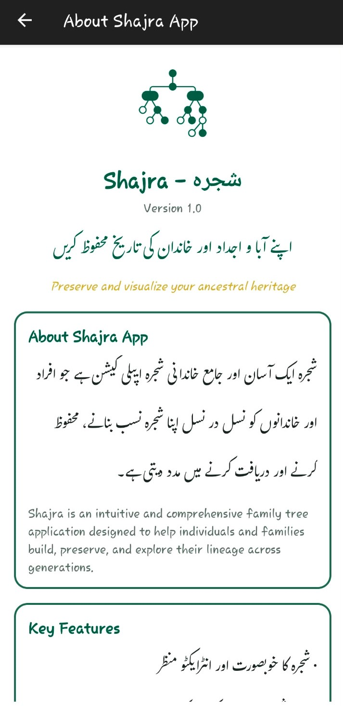

Interactive family trees
Explore ancestral and historical trees, including Raja Mal Rathore. Search names, pan around, pinch to zoom, and fit or reset your view.
01A home for your heritage
An intuitive family tree for building, preserving, and exploring your lineage across generations. Your family history stays with you — private and available offline.
اپنے آبا و اجداد اور خاندان کی تاریخ محفوظ کریں
About Shajra
شجرہ (Shajra) is an Android genealogy app for exploring historical family trees and building your own immediate and extended family lineage. Capture the people, relationships, and stories that make your family yours.
To help families preserve their roots, connect generations, and keep their history safe, private, and close at hand.
Discover what you can do →
Everything connected
Thoughtful tools for exploring lineage, adding family members, and keeping their stories close.
Explore ancestral and historical trees, including Raja Mal Rathore. Search names, pan around, pinch to zoom, and fit or reset your view.
01Start your own family tree and add parents, spouses, sons, daughters, brothers, and sisters with clear relationship mapping.
02Record Urdu and English names, gender, birth and death dates, biographies, notes, and profile photos with square cropping.
03Family records, profile photos, and notes are stored locally on your device. Your family data is not uploaded to the cloud.
04Export a backup of your family tree and restore it later to help keep your carefully collected history safe.
05Add an extra layer of protection to your family records with a PIN and supported fingerprint or face unlock.
06Use the app in English or Urdu, with Nastaliq typography such as Gulzar for a familiar reading experience.
07Choose Light Mode, Dark Mode, or System Default to make Shajra feel at home on your device.
08Bring generations together, preserve important details, and pass your family story on to the next generation.
09A simple beginning
Create your personal family tree on your Android device.
Record names, dates, photos, notes, and personal stories.
Connect parents, spouses, children, and siblings across branches.
Navigate your tree and create local backups as it grows.
See the connection
Every family has a shape. Shajra helps you see yours clearly, from the people who came before to the branches growing today.
See the app ↗In the app
Take a closer look at the family tree, member details, and app experience.





Made for real families
The best family stories are the ones we keep returning to. Shajra gives them a place to grow, together.
Keep family information clear, considered, and easy to find.
Understand the relationships that make your family unique.
Explore generations and uncover stories you never knew.
Leave the next generation more than names: leave them a story.
Your trust comes first
Shajra stores your family tree, photos, and notes locally on your device. There are no cloud uploads of your family data. Use local backup and restore to manage a copy of your records.
Under the branches
Designed for personal family history on Android, with your records kept on your device.
Built for Android devices, with an interface designed around family tree management.
01Uses an MVVM architecture and a local repository pattern to organize app data.
02Family records are persisted locally using SQLite through Android Room.
03BiometricPrompt and a custom app lock support PIN and biometric protection.
04A dedicated tree view presents family connections with dynamic layouts and rounded avatars.
05Localized strings and custom typography support both English and Urdu.
06Questions, answered
Shajra is an Android genealogy app for exploring family trees and recording your own family relationships and history.
Yes. Family tree records, photos, and notes are stored locally on your device, and your family data is not uploaded to the cloud.
Yes. Shajra supports both Urdu and English, including Urdu names and localized app text.
Use the app's local backup and restore tools to export your family tree and restore it when needed.
Shajra supports app locking with a PIN and device-supported biometric authentication.
Email waqasjanjua.developer@gmail.com to request the APK or get help.
Your story starts here
Shajra is made for Android. The APK download link is not yet published on this website; contact the developer to request the installer.
↓REQUEST THEShajra APK↗Developer & support
Questions, feedback, or need help getting started? Contact the developer directly.
waqasjanjua.developer@gmail.com